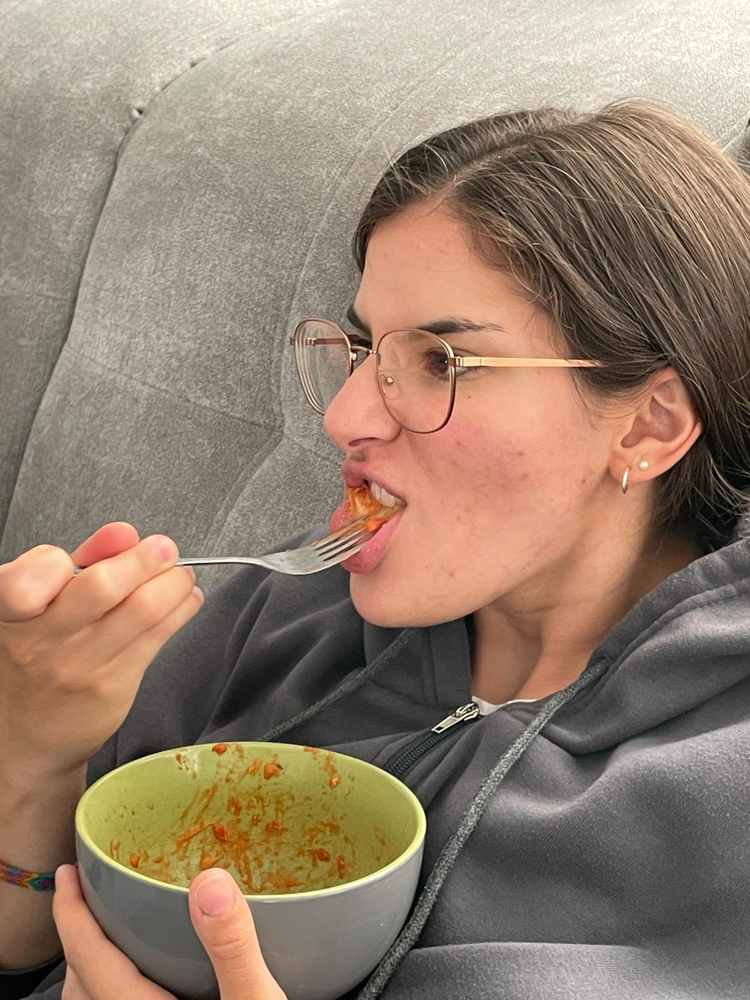
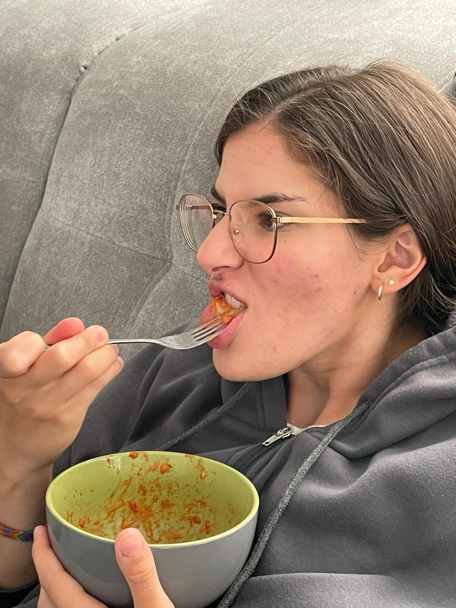

𝙈𝙤𝙙𝙚𝙡𝙨 & 𝙈𝙚
Models lieben mich, weil sie von mir so viel Schmand bekommen wie sie brauchen,
um sich von mir fotografieren zu lassen. Ich werde alles in meiner Macht stehende tun, um
das Fotoshooting zu einem so angenehmen Erlebnis zu machen wie möglich. Dazu gehören nur drei Dinge:
Schmand, natürlich auch noch Schmand und nicht zu vergessen Schmand. Denn nur so schmandest du auch der
Kamera.
 

Wenn das mal keine überzeugenden Bilder waren fress ich nen Besen.
Was natütlich auch nicht fehlen darf sind freshe Styles. Natürlich weiß ich nicht nur wie man Schmand fressen kann,
sondnern auch, wie sich Schmand in den Haaren eignet. Sie machen deine Haare so fettig und glänzend, dass man sie schon aus
100km Entfernung schreien hören kann, weil sie gewaschen werden wollen.
Genau dein Style.
Und natürlich eignet sich Schmand auch als Haargel, um Frisuren zu gestalten, die die Gesetze der Physik brechen. (Gleichzeitig sind deine Haare dann auch ein guter Snack für zwischendurch)

Bevor du fragst, nein, zu viel Schmand geht nicht. Ja, man wird echt fett, aber wie soll die Kamera einen denn sonst auch finden, denkst du wirklich
ich hab so gute Augen, dass ich dich als Strich in der Landschaft irgendwo erkennen kann? So gut ist mein Equipment dann auch wieder nicht.
Also tu mir einen gefallen, fress dich fett mit nem dicken Schmandbrot, dann wird da was draus.

Wie du vielleicht schon merkst sind Modelshootings meine Leidenschaft. Wenn du dich jetz fragst, aber Schmandmann irgendwie
sehen die alle aus wie du?! Dazu kann ich nur sagen, wie denn auch sonst?? Als ob ich da irgendjemanden hinstelle, wenn ich ganz genau
weiß, dass es ja wohl nichts besseres gibt als meine Fettheit in Person. Daher suche ich nur Models, die meinen genauen Maßen entsprechen.
Du bist natürlich einen Ausnahme, denn du bezahlst mich. Das heißt aber nicht, dass ich mir währenddessen nicht denke, dass du
aussiehst wie ein Schluck Crème fraîche in der Kurve.
Hier ein paar meiner besten Schnappschüsse:


Die Bedeutung von Schmand darf bei meinen Shootings nicht unterschätzt werden, denn wie man so schön zu sagen pflegt: "Schmand ist ein Sauerrahmprodukt". Dank dem hohen Fettgehalt von Schmand flockt dieser beim erhitzen nicht aus. Dadurch wirst du während meinem Shooting auch nicht ausflocken, es sei denn dies ist dein expliziter Wunsch, denn dein Wunsch sei mir ein Befehl. HAHAHA das denkst du auch nur du. ICH bin der Fotograf, das bedeutet ICH habe die Vision, wenn meine Vision sagt ey stell dich da hin und fress nen Blaubeerpfannkuchen, dann machst du das und tada!
Ein Meisterwerk!